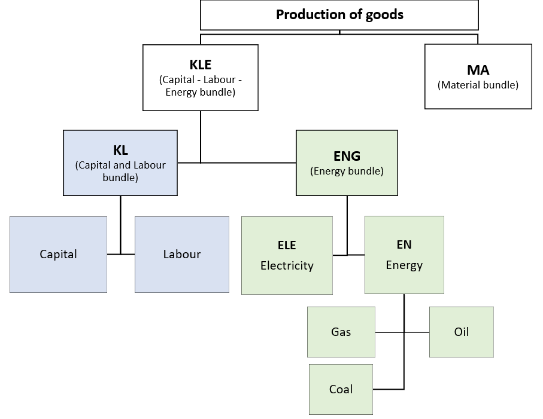
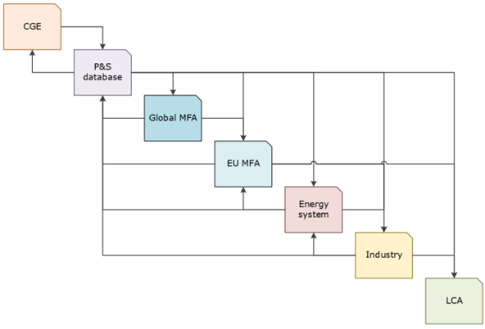

The page serves as a methodological and technical guide of OPEN-GEM, a newly developed, open-source Computable General Equilibrium (CGE) model, designed to assess the socioeconomic implications of climate and circular economy policies across Europe. Built within the TRANSIENCE project, it supports the evaluation of ambitious industrial decarbonisation strategies in the EU by capturing the complex interlinkages between economic activities, environmental policies, and global trade.
OPEN-GEM is a multi-sectoral, multi-regional, recursive-dynamic CGE model, representing 44 economic sectors across 28 regions, including all EU member states individually. It is calibrated using the Global Trade Analysis Project GTAP Data Base (v11) for the base year 2017, with updates from the GTAP Circular Economy Data Base. The model simulates projections from 2020 to 2050, providing detailed outputs on GDP, household consumption, investments, trade flows, emissions, and sectoral production.
The model uniquely features a detailed representation of energy-intensive sectors (e.g., cement, steel, aluminium), including primary, secondary, and recycling processes. This allows integration with industry-based models and supports more precise simulation of decarbonisation pathways. It incorporates environmental and climate constraints such as carbon pricing, CO₂ emissions caps, and emission permit trading mechanisms.
OPEN-GEM plays a critical role within the MIC3 open modelling ecosystem, enabling a holistic and integrated analysis of circularity, sustainability, and decarbonisation of European industry. It is designed for transparency, reproducibility, and policy relevance, providing decision-makers with robust evidence on the socioeconomic impacts of the green transition.
The code of the OPEN-GEM can be found in the following repository: https://github.com/e3modelling/OPEN-GEM.
2.1.1 Mathematical foundations 4
2.2 Data (inputs and outputs) 15
3 Novelty or benefits of the module 16
4 Integration in MIC3/ Module linkages 17
Table of Figures
Figure 1: Nesting scheme in the OPEN_GEM sectors 6
Figure 2: Trade decision tree 10
Figure 3: Planned interfaces in the MIC3 baseline workflow from D3.4 17
Table of Tables
Table 1: Country-Regional aggregation of the OPEN_GEM model 2
Table 2: Sectoral aggregation of the OPEN_GEM model 3
Decarbonisation and the transition to a circular economy present several interconnected challenges. One of the key issues is the need for change across industries and households, which often involves high upfront costs, technological innovation, and rethinking entire supply chains. The transition from a production process that relies heavily on fossil fuels to a greener and less resource-intensive process requires a modelling approach that can capture the inter-dependencies of the economic system at sufficient scale and granularity. Computable General Equilibrium (CGE) models offer significant strengths in evaluating the complex and interrelated issues associated with decarbonisation and circularity performance. Their primary advantage lies in their ability to capture economy-wide interactions across sectors, regions, and agents, making them well-suited to assess the broad impacts of environmental and economic policies. CGE models account for market feedbacks, price adjustments, and resource reallocation, allowing analysts to evaluate how changes in one part of the economy ripple through others. This makes them particularly effective for identifying indirect impacts, distributional effects, and policy trade-offs. Moreover, CGE models can be tailored to incorporate environmental constraints, carbon pricing mechanisms, and material flow dynamics, enabling a holistic understanding of how different policy scenarios affect both economic performance and sustainability goals. To this end, an extension of sectoral coverage in macroeconomic models is needed to cover the key characteristics in the demand and supply of the sectors/products that play a key role in the transition to a low-carbon, circular economy.
In this study we present the multi-sector, multi-regional CGE model OPEN_GEM, which is developed within TRANSIENSE. The model is designed to support the socioeconomic assessment of energy and climate policies with a particular focus on the impacts related to GDP and sectoral production. OPEN_GEM, an open-source model, will benefit from using key outputs of the industry-based models in key industrial sectors (i.e., cement, iron & steel, aluminium, etc.) as exogenous inputs—more specifically, the different technologies by sector, the cost structure by different technology, and the adoption of each technology by sector. By soft-linking it with industry-based models, OPEN-GEM will extend its’ application to cover policies related to the circular economy. A number of different modules will be developed with TRANSIENCE to cover a wide range of technical and structural characteristics of industries related to the decarbonisation and circular economy, altogether comprising the MIC3 model ecosystem to be developed within TRANSIENCE (see Deliverable D3.4 – Framework for industrial transition modelling), providing the framework of the complex communications among them.
This document serves as a methodological and technical guide of OPEN_GEM. Section 2 presents the theoretical foundations on which the model is built and provides the mathematical formulations of all the equations included in the model. Section 3 presents the benefits of this module and Section 4 the integration of this module in the planned interfaces in the MIC3 baseline workflow.
The OPEN_GEM model is an open-source CGE model that is designed within the TRANSIENCE project. Its aim is to assess the economic implications of energy, climate and circular economy policies on the EU industrial tissue and capture the interactions between the EU member states and the rest of the world.
This version of the model covers the whole world aggregated in 28 countries/regions (see Table 1) where each EU member state is represented individually. The ‘rest of the world’ group of countries is represented as the 28th region of the model.
The model is a multi-sectoral recursive dynamic CGE model driven by accumulation of capital and equipment, which provides details on the macro-economy and its interactions with the environment and the energy system. It covers individually 44 activities including a detailed representation of the industry and energy sectors together with agriculture, transport, and services (see Table 2).
It can be used for the comparative analysis of alternative policy scenarios and the provision of insights on the distributional effects of long-term structural adjustments. In all simulation scenarios, the model ensures that the economic system is always in general equilibrium. Finally, it is a recursive dynamic model1. Its properties are manifested through stock-flow relationships, technical progress, capital accumulation, agents’ (myopic) expectations, and a 5-year time step.
Table 1: Country-Regional aggregation of the OPEN_GEM model
| Country Code | Country/ Region | Country Code | Country/ Region |
|---|---|---|---|
| AUT | Austria | IRL | Ireland |
| BEL | Belgium | ITA | Italy |
| BGR | Bulgaria | LTU | Lithuania |
| CYP | Cyprus | LUX | Luxembourg |
| CZE | Czechia | LVA | Latvia |
| DEU | Germany | MLT | Malta |
| DNK | Denmark | NLD | Netherlands |
| ESP | Spain | POL | Poland |
| EST | Estonia | PRT | Portugal |
| FIN | Finland | ROU | Romania |
| FRA | France | SVK | Slovakia |
| GRC | Greece | SVN | Slovenia |
| HRV | Croatia | SWE | Sweden |
| HUN | Hungary | ROW | Rest of the World |
Table 2: Sectoral aggregation of the OPEN_GEM model
| Code | Description | Code | Description |
|---|---|---|---|
| Industry | IND25 | Copper-secondary | |
| IND01 | Non-metallic minerals mining | IND26 | Recycling-copper |
| IND02 | Mining of iron ores | IND27 | Other metals-primary |
| IND03 | Mining of bauxite ores | IND28 | Other metals-secondary |
| IND04 | Mining of copper ores | IND29 | Recycling-other metals |
| IND05 | Mining of other ores | IND30 | Non-ferrous metals casting |
| IND06 | Potassium fertiliser | IND31 | Metal products |
| IND07 | Nitrogen fertiliser | IND32 | Paper products, publishing |
| IND08 | Phosphorus fertiliser | IND33 | Equipment Goods |
| IND09 | Other chemicals | IND34 | Consumer Goods Industries |
| IND10 | Basic pharmaceutical products | IND35 | Construction |
| IND11 | Rubber products | Energy | |
| IND12 | Plastic products-primary | ENE01 | Coal |
| IND13 | Plastic products-secondary | ENE02 | Crude Oil |
| IND14 | Recycling-plastics | ENE03 | Oil |
| IND15 | Cement | ENE04 | Gas |
| IND16 | Other mineral products | ENE05 | Power Supply |
| IND17 | Iron and steel-primary | Transport | |
| IND18 | Iron and steel-secondary | TRA01 | Transport |
| IND19 | Recycling-iron and steel | Agriculture | |
| IND20 | Iron and steel casting | AGR01 | Agriculture |
| IND21 | Aluminium-primary | Services | |
| IND22 | Aluminium-secondary | SRV01 | Market Services |
| IND23 | Recycling-aluminium | SRV02 | Non-Market Services |
| IND24 | Copper-primary |
The OPEN_GEM model is written in GAMS. The implementation of the model is made in two stages:
Calibration: Calculation/Estimation/Population of the model parameters in such a way that the model, when solved, fully replicates the base year data.
Dynamic projections and simulations: This stage regards the development of the reference projection and quantification of counterfactual scenarios.
Based on the Global Trade Analysis Project (GTAP) input-output tables of the base year (2017), the model projects full Input-Output (IO) tables for each EU MS for the period 2020–2050 in a 5-year time step. The main outputs of the model include main macroeconomic accounts (GDP, household consumption, investment, government expenditures, balance of trade, etc.), sectoral production, imports and exports by sector, energy use, and CO2 energy related emissions.
OPEN_GEM considers all economic agents (classified in groups: firms, households, government and the external sector).
The model formulation takes into consideration the microeconomic theory on agents’ behaviour and the macroeconomic relationships and flows among them. The following sections provide the mathematical formulation of the model with detailed presentation of economic agents’ behaviour.
Firms adopt an optimising behaviour and operate under a perfect competition regime. A nested multi-factor Constant Elasticity of Substitution (CES) production function is used. Firms’ choice regards the optimal level of production inputs (including primary factors of production capital, labour and intermediate inputs energy, and other commodities). The model identifies a number of i firms, j intermediate inputs, labour, and capital.
Firms operating in perfectly competitive sectors decide upon production factor inputs so as to minimise their production costs. Each production factor is paid at its marginal product and firms’ unit cost prices2 are set to cover the costs of all production factors (capital payment inclusive), not allowing for non-normal profits. It is assumed that each firm3 produces a single good, which is differentiated from any other good produced. Firms’ output, factor demands, and associated unit costs are presented below. Each firm uses a constant elasticity of substitution (CES) production technology. The nesting of the CES production function depends on the substitution possibilities that characterise the production technology of each firm.
The cost minimisation objective function of the firm is:
| \[{min\ {Cost}_{i,r,t} =}{\sum_{f}^{}{{QF}_{f,i,r,t} \cdot {PQF}_{f,i,r,t}}}\] | [1] |
|---|
subject to the production technology of firms:
| \[Q_{i,r,t} = {{\overline{Q}}_{i,r} \cdot \frac{{tfp}_{i,r,t}}{{\overline{tfp}}_{i,r}} \bullet \left( \sum_{f}^{}{\theta_{f,i,r,t} \cdot \left( \frac{{QF}_{f,i,r,t}}{{\overline{QF}}_{f,i,r}} \right)^{\rho}} \right)\ }^{\frac{1}{\rho}}\] | [2] |
|---|
The respective derived demands for the inputs in the production (capital, labour, materials/intermediate inputs) are given by:
| \[{PQ}_{i,r,t} = {{\overline{PQ}}_{i,r} \cdot \frac{{\overline{tfp}}_{i,r}}{{tfp}_{i,r,t}} \bullet \left( \sum_{f}^{}{\theta_{f,i,r,t} \cdot \left( \frac{{PQF}_{f,i,r,t}}{{\overline{PQF}}_{f,i,r}} \right)^{1 - \sigma}} \right)\ }^{\frac{1}{1 - \sigma}}\] | [3] |
|---|---|
| \[{QF}_{i,f,r,t} = {\overline{QF}}_{i,f,r} \bullet \frac{Q_{i,r,t}}{{\overline{Q}}_{i,r}} \bullet \left( \frac{{\overline{PQF}}_{f,i,r}}{{\overline{PQ}}_{i,r}} \bullet \frac{{PQ}_{i,r,t}}{{PQF}_{f,i,r,t}} \right)^{\sigma} \cdot \left( \frac{{tfp}_{i,r,t}}{{\overline{tfp}}_{i,r}} \right)^{\sigma - 1}\] | [4] |
where:
\(i:\) sector, \(r\): region, \(t\): time, f: inputs in the production function (capital, labour, and intermediate inputs). Note that the (\(\overline{x})\) symbol means that the variable \((x)\) is in its base year value.
| \(Q_{i,r,t}\): | production in volume for activity \(i\) |
|---|---|
| \({\overline{Q}}_{i,r}\): | production in volume for activity \(i\) (base year) |
| \(QF_{f,i,r,t}\): | amount of production factor \(f\) used in production in year t |
| \({\overline{QF}}_{f,i,r}\): | amount of production factor \(f\) used in production (base year). |
| \({PQF}_{f,i,r,t}\): | unit cost of factor \(f\). |
| \({\overline{PQF}}_{f,i,r}\): | unit cost of factor \(f\) (base year). |
| \({PQ}_{i,r,t}\): | unit cost of production for activity \(i\). |
| \({\overline{PQ}}_{i,r}\): | unit cost of production for activity \(i\) (base year). |
| \(\theta_{f,i,r,t}\): | share parameter (to calibrate to base year values) |
| \(\rho\): | elasticity \(\left( \rho = \frac{\sigma - 1}{\sigma} \right)\) |
| \[\sigma:\] | elasticity of substitution between production factors |
| \({tfp}_{i,r,t}\): | total factor productivity |
| \({\overline{tfp}}_{i,r}\): | total factor productivity at base year \(( = 1)\) |
The CES production technology applies to all firms. Production functions in OPEN_GEM exhibit a nested separability scheme, involving capital (K), labour (\(L\)), energy (E), and materials and transport (M). The nesting scheme differentiates among the sectors so as to take into account the specific features of each activity and to capture the different substitution possibilities that characterise each production sector.
For the remainder of the text, we use the following symbols for variables’ subscripts:
pr, br, (interchangeably) for activity sector
er, cr, cs (interchangeably) for countries
t for time gv for government revenues and expenses categories
co2 for CO2 energy related emissions
fa for production factor
se, sr (interchangeably) for institutional sector, i.e., households (h), firms (f), government (g), and world (w)
Figure 1: Nesting scheme in the OPEN_GEM sectors
 |
||||||||||
|---|---|---|---|---|---|---|---|---|---|---|
The nesting scheme develops as follows:
\[Α\_ XD = {a\_ xd}_{0} \bullet \left( d^{kle} \bullet \left( \frac{A\_ KLE}{{a\_ kle}_{0}} \right)^{\rho} + d^{trama} \bullet \left( \frac{A\_ MA}{{a\_ ma}_{0}} \right)^{\rho} \right)^{\frac{1}{\rho}}\] where: \(d\): share parameter and \(\rho\): substitution elasticity parameter
\[Α\_ KLE = \mathbf{CES}(A\_ KL,\ A\_ ENG)\] \[Α\_ MA = \mathbf{CES}\left( {A\_ IO}_{prmane} \right)\]
\[Α\_ KL = \mathbf{CES}(A\_ KAV,\ A\_ LAV)\] \[Α\_ ENG = \mathbf{CES}(A\_ EN,\ A\_ ELE)\]
\[Α\_ EN = \mathbf{CES}\left( {A\_ IO}_{prfuel} \right)\] |
In each region/country in OPEN_GEM, a representative household is modelled that maximises its utility function subject to its budget constraint. Its budget is derived from its income as capital owners from labour supply and the transfers from other institutional sectors.
Its utility function is a Linear Expenditure System (LES4) function that considers subsistence minima:
| \[U = \left( \sum_{i}^{}{{bh}_{i,r,t} \cdot ln\left( {CV}_{i,r,t} - {CH}_{i,r,t} \right)} \right)\] | [5] |
|---|
Where \({CV}_{i,r,t}\ \)is total consumption, \({CH}_{i,r,t}\) is the subsistence minima consumption. Total and disposable income is derived as follows:
| \[YDISP = PL \bullet L + W^{oth}\] | [6] |
|---|
where:
\(PL \bullet L\): labour income
Woth: non-labour income (e.g. institutional transfers)
The consumer’s optimisation problem is defined as:
| \[\max_{CV}\int_{t = 0}^{\infty}{e^{- stp \bullet t}U(CV)}\] | [7] |
|---|---|
| \[s.t.\ \ \dot{w}(t) = YDISP(t) - PCI(t) \bullet CV(t) - PCI(t) \bullet CH(t)\] | [8] |
where stp is the social time preference / subjective rate of discount. Solving the above problem, the optimal demand for total consumption is derived:
| \[CV = CH + \mu \bullet \frac{bh}{PCI} \bullet (YDISP - PCΙ \bullet CH)\] | [9] |
|---|
μ is a proxy to the marginal propensity to consume \(\mu = \frac{stp}{ir}\), and ir is the interest rate. bh is the LES private consumption share parameter. Once the household decides total household consumption it needs to decide over the different consumption by product (PR).
OPEN_GEM is a recursive dynamic model solved sequentially over time. It is assumed that investment taking place in time t increases the production capacity in the following period at time t+1. The law of motion of capital stock is given by:
| \[{A\_ KAVC}_{pr,er,t} = \left( 1 - d_{pr,er,t} \right)^{\Delta t} \bullet {A\_ KAVC}_{pr,er,t - 1} + {\frac{1 - \left( 1 - d_{pr,er,t} \right)^{\Delta t}\ }{d_{pr,er,t}}A\_ INVP}_{pr,er,t}\] | [10] |
|---|
OPEN_GEM is a savings-driven model. Firm’s investment is translated into demand for investment goods, which are produced from the rest of the sectors of the economy through the constant coefficient tinvpvpr, :
| \[{A\_ INVP}_{pr,er,t} = {tinvpv}_{pr,er,t} \bullet \frac{{exo\_ investments}_{er,t}}{{P\_ INVP}_{pr,er,t}}\] | [11] |
|---|
where:
exo_investmentser,t : exogenous investments tinvpvpr,er,t : share of each firm in delivery of investment
V_INVse,er,t: investment value by agent
P_INVPpr.er,t: price of investment product
Government’s behaviour (spending) is exogenous to the OPEN_GEM model. Government’s final demand by product (A_GCpr,er,t) is obtained by applying fixed coefficients (tgcvpr,er,t) to the exogenous volume of government consumption (gctver,t):
| \[{A\_ GC}_{pr,er,t} = {gctv}_{er,t} \bullet {tgcv}_{pr,er,t}\ \] | [12] |
|---|
Exogenous calculation of government consumption is assumed in line with the exogenous targets of the other components of GDP. A set of exogenous assumptions should be included in the Baseline scenario (i.e., technical progress, investments, government consumption, etc.) in line with selected exogenous targets (i.e., investment to GDP, GDP growth, etc.).
The following equation describes all tax revenues and subsidy expenditure of the government disaggregated by government tax/revenue categories:
Government revenue from duties is the sum of bilateral duty rates for all the imported products adjusted by the price index.
| \[{V\_ FGRB}_{gv,pr,er,t} = \sum_{cr}^{}{txduto}_{pr,er,cr,t} \bullet A\_{IMPO}_{pr,er,cr,t} \bullet \frac{{WPI}_{t}}{{WPI}_{0}}\] | GV=DUT | [13] |
|---|
where:
txdutopr,er,cr,t: bilateral duty rate
A_IMPOpr,er,cr,t: imports in volume
WPIt: the world price index
WPI0: the world price index in the base year
Government revenues or expenditures on taxes less subsidies of production:
| \[{V\_ FGRB}_{gv,pr,er,t} = {txproduction}_{pr,er,t} \bullet \frac{{WPI}_{t}}{{WPI}_{0}} \bullet {A\_ XD}_{pr,er,t}\ \ \ \] | GV=SUB | [14] |
|---|
where:
txproductionpr,er,t: the taxes less subsidies rate
A_XDpr,er,t: production in volume
Government revenue on indirect taxes is the sum of the respective tax rates multiplied by production, products, households’ energy consumption and on firms’ energy
| \[{V\_ FGRB}_{gv,pr,er,t} = {txproducts}_{pr,er,t} \bullet \frac{{WPI}_{t}}{{WPI}_{0}} \bullet \left\lbrack \sum_{br}^{}\left( {A\_ IO}_{pr,br,er,t} \right) + A\_{GC}_{pr,er,t} + {A\_ HC}_{pr,er,t} + A\_{INVP}_{pr,er,t} \right\rbrack\] | GV=IT | [15] |
|---|
where:
txproductspr,er,t: the taxes less subsidies on products
A_IOpr,br,er,t: IO deliveries between sectors of activities
A_HCpr,er,t: the deliveries to private consumption
A_GCpr,er,t: deliveries to public consumption by branches
A_INVPpr.er,t: the products used in investment deliveries by sector
Government revenue on environmental taxes includes taxes on firms proportional to their emissions less the endowments from unauctioned permits plus tax revenues from households’ environmental tax
| \[{V\_ FGRB}_{gvb,pr,er,t} = {TXENV}_{pr,er,t} \bullet {EMMBR}_{pr,er,t} + {TXENVH}_{pr,er,t} \bullet \bullet {A\_ EMMH}_{pr,er,t}\] | GVB= ENV | [16] |
|---|
where:
TXENVpr,er,t: the environmental tax for firms
A_EMMBRpr,er,t: the energy related emissions by branches
TXENVHpr,er,t: the environmental tax for household
A_EMMHpr,er,t: the energy related emissions for household
Firms and households consume a composite good that is composed of an imported part and a domestically produced part. Imported and domestically produced goods are considered as imperfect substitutes (Armington, 1979). The supply decision of a good in the domestic economy is split in two stages:
At the first stage, firms decide on the overall imports that they require.
At the second stage, firms decide from which countries they will import. They split total import demand decided at stage 1 to regional/country demand.
The import price of each country (destination) is based on the unit cost of production of the supplying country (origin).
| Figure 2: Trade decision tree |
|---|
Firms’ cost minimisation problem (for the Imports 1st level) is:
| \[\min C_{pr,er,t} = {P\_ XD}_{pr,er,t} \bullet A\_{XXD}_{pr,er,t} + {P\_ IMP}_{pr,er,t} \bullet {A\_ IMP}_{pr,er,t}\] | [17] |
|---|
where:
P_XDpr,er,t: price of domestically produced good
A_XXDpr,er,t: production for domestic use
P_IMPpr,er,t: import price
A_IMPpr,er,t: imports
such that:
| \[{A\_ Y}_{pr,er,t} = {AC}_{pr,er,t} \bullet \left\lbrack \delta_{pr,er,t} \bullet {A\_ XXD}_{pr,er,t}^{\frac{\sigma_{x_{pr,er,t}} - 1}{\sigma_{x_{pr,er,t}}}} + \left( 1 - \delta_{pr,er,t} \right) \bullet {A\_ IMP}_{pr,er,t}^{\frac{\sigma_{x_{pr,er,t}} - 1}{\sigma_{x_{pr,er,t}}}} \right\rbrack^{\frac{\sigma_{x_{pr,er,t}}}{\sigma_{x_{pr,er,t}} - 1}}\] | [18] |
|---|
where:
A_Ypr,er,t: composite good
ACpr,er,t: scale parameter in the Armington function
δpr,er,t: share parameter estimated from the base year data related to the value shares of A_XXDpr,er,t and A_IMPpr,er,t in the demand for composite good Ypr,er,t
σχ: the Armington elasticity between imported and domestically produced goods
The optimal demand for domestic and imported goods is obtained by employing the Shephard’s lemma5.
| \[{A\_ XXD}_{pr,er,t} = {A\_ Y}_{pr,er,t} \bullet {AC}_{pr,er,t}^{\sigma_{x_{pr,er,t}} - 1} \bullet \left( 1 - \delta_{pr,er,t} \right)^{\sigma_{x_{pr,er,t}}} \bullet \left( \frac{{P\_\Upsilon}_{pr,er,t}}{{P\_ XD}_{pr,er,t}} \right)^{\sigma_{x_{pr,er,t}}}\] | [19] |
|---|---|
| \[{A\_ IMP}_{pr,er,t} = {A\_ Y}_{pr,er,t} \bullet {AC}_{pr,er,t}^{\sigma_{x_{pr,er,t}} - 1} \bullet \delta_{pr,er,t}^{\sigma_{x,pr,er,t}} \bullet \left( \frac{{P\_\Upsilon}_{pr,er,t}}{{P\_ IMP}_{pr,er,t}} \right)^{\sigma_{x_{pr,er,t}}}\] | [20] |
where:
A_IMPpr,er,t: the imports by branch
P_Ypr,er,t: the unit cost for the composite good
| \[{P\_\Upsilon}_{pr,er,t} = \frac{1}{{AC}_{pr,er,t}} \bullet \left\lbrack \delta_{pr,er,t}^{\sigma_{x,pr,er,t}} \bullet {P\_ IMP}_{pr,er,t}^{1 - \sigma_{x_{pr,er,t}}} \bullet + \left( 1 - \delta_{pr,er,t} \right)^{\sigma_{x_{pr,eu,t}}} \bullet {P\_ XD}_{pr,er,t}^{1 - \sigma_{x_{pr,er,t}}} \right\rbrack^{\frac{1}{1 - \sigma_{x_{pr,er,t}}}}\] | [21] |
|---|---|
| \[{P\_ IMP}_{pr,er,t} = \left\lbrack \sum_{cr}^{}{{betashare}_{pr,er,cr,t}^{{sigmai}_{pr,er,t}} \bullet}{{P\_ IMPO}_{pr,er,cr,t}}^{(1 - {sigmai}_{pr,er,t})} \right\rbrack^{\left( \frac{1}{1 - {sigmai}_{pr,er,t}} \right)}\] | [22] |
where:
P_IMPpr,er,t: price of total imports
betasharepr,er,cr,t: share parameter
σpr,er,t : the elasticity of substitution
P_IMPOpr,er,cr,t: import price of good pr for country er originating from country cr
| \[{P\_ IMPO}_{pr,cs,cr,t} = P\_{PWE}_{pr,cr,t} + {txduto}_{pr,cs,cr,t} \bullet \frac{{WPI}_{t}}{{WPI}_{0}} + \sum_{itrn}^{}\left( {cif\_ vtwr}_{itrn,pr,cs,t} \bullet {P\_ TR}_{itrn,t} \right)\] | [23] |
|---|
where:
P_PWEpr,cr,t: the export price in international currency
cif_vtwr,itrn,pr,cs,t: the demand share for transport margins
P_TRitrn,t: the international transport margin price
The GTAP Data Base identifies two sets of data as regards to trade:
bilateral trade flows of goods and services (the representation of which in the OPEN_GEM model is described in the previous section)
supply of international trade margins (i.e., freight transport services)
The GTAP parameters related to trade are:
| Name | Description |
|---|---|
| VST (mg*,er) | Margin exports |
| VTWR (mg,pr,er,cr) | Margin usage in facilitation of flow of commodity pr from country er (origin) to country cr (destination) |
* mg: air, land, water, Source: McDougal (2006)
The sector that supplies the international transport services (i.e., water, air, and land transport) earns the difference between Cost, Insurance, and Freight (C.I.F.) and Free on Board (F.o.B.) (\(\sum_{r}^{}{VST}_{j,r}\), the supply of margins). The market clearance conditions for the international market services imply that the sum across all regions of service exports equals the sum of all bilateral trade flows of service inputs (usage).
| \[\sum_{r}^{}{vst}_{j,r} = \sum_{i,r,s}^{}{vtwr}_{j,i,r,s}\] | [24] |
|---|
In the OPEN_GEM model, the international transport margin price is determined by the following equation:
| \[{P\_ TR}_{t} \leq \sum_{er}^{}\left( {thetavst}_{er,t} \bullet \frac{{P\_ PWE}_{pr,er,t}}{\overline{{P\_ PWE}_{pr,er,0}}} \right)\] | [25] |
|---|
where:
thetavster,t: measures the share of each country in total international transport margins in the base year. The activity level of each type of transport is defined as:
| \[{A\_ YVST}_{t} \bullet {vtag}_{t} \geq \sum_{br,er,cr}^{}\left( {A\_ EXPO}_{pr,er,cr,t} \bullet {cif\_ vtwr}_{pr,er,cs,t} \right)\] | [26] |
|---|
where:
vtagt : the output of transport in the international pool in the base year
Exports of transport services are given by:
| \[{A\_ YVTWR}_{er,t} = \ {A\_ YVST}_{t}{\bullet {vtag}_{t} \bullet thetavst}_{er,t}\] | [27] |
|---|
The bilateral import price equals the export price of the exporter in case of tradable services, while in the case of merchandise sectors the bilateral import price is given by the export price plus the bilateral cif/fob margins.
A_IMPObr,cr,cs,t: denotes imports of good pr demanded by country cr from country cs.
| \[{A\_ IMPO}_{br,cr,cs,t} = A\_{IMP}_{nr,cr,t} \bullet \left( {betashare}_{br,cr,cs,t} \bullet \frac{{P\_ IMP}_{br,cr,t}}{{P\_ IMPO}_{br,cr,cs,t}} \right)^{{sigmai}_{br,cr,t}}\] | [28] |
|---|
and
| \[{A\_ EXPO}_{br,\mathbf{cr},cs,t} = {A\_ IMPO}_{br,cs,\mathbf{cr},t}\] | [29] |
|---|
Intermediate and final consumers buy the composite good A_Y at the price P_Y plus taxes. Below, we report the different price formulations included in the OPEN_GEM model:
| \[{P\_ IO}_{pr,er,t} = {txproducts}_{pr,er,t} \bullet \frac{{WPI}_{t}}{{WPI}_{0}} + {P\_ Y}_{pr,er,t}\] | [30] |
|---|---|
| \[{P\_ HC}_{pr,er,t} = {txproducts}_{pr,er,t} \bullet \frac{{WPI}_{t}}{{WPI}_{0}} + {P\_ Y}_{pr,er,t}\] | [31] |
| \[{P\_ GC}_{pr,er,t} = {txproducts}_{pr,er,t} \bullet \frac{{WPI}_{t}}{{WPI}_{0}} + {P\_ Y}_{pr,er,t}\] | [32] |
| \[{P\_ INVP}_{pr,er,t} = {txproducts}_{pr,er,t} \bullet \frac{{WPI}_{t}}{{WPI}_{0}} + {P\_ Y}_{pr,er,t}\] | [33] |
where:
P_IOpr,er,t: price of intermediate inputs to production
P_HCpr,er,t: price of deliveries to private consumption by branch
P_GCpr,er,t: price of delivery to public consumption by branch
P_INVPpr,er,t: price of delivery to investments by branch
The producer price is given by:
| \[{P\_ XD}_{brt,er,t} = {P\_ PD}_{brt,er,t}\ + {txproduction}_{brt,er,t} \bullet \frac{{WPI}_{t}}{{WPI}_{0}}\] | [34] |
|---|---|
| \[P\_{PWE}_{pr,er,t} = {P\_ PD}_{pr,er,t}\ + {txproduction}_{pr,er,t} \bullet \frac{{WPI}_{t}}{{WPI}_{0}}\] | [35] |
where:
P_XDbrt,er,t: the (domestic) supply price addressed to domestic demand
P_PWEpr,er,t: the (domestic) supply price addressed to exports
txproductionpr,er,t: the rate of taxes less subsidies on production
The market clearance equation is:
| \[{A\_ XD}_{pr,er,t} = {A\_ XXD}_{pr,er,t} + \sum_{cr}^{}{A\_ EXPO}_{pr,er,cr,t} + A\_{YVTWR}_{pr,er,t}\] | [36] |
|---|
Total supply of goods (domestically produced and imported) expended to intermediate consumption, private and public consumption, and investments.
| \[{A\_ Y}_{pr,er,t} = \sum_{br}^{}\left( A\_{IO}_{pr,br,er,t,} \right) + {A\_ HC}_{pr,er,t} + {A\_ GC}_{pr,er,t} + {A\_ INVP}_{pr,er,t}\] | [37] |
|---|
The market clearance equations for capital, which is mobile across sectors but not across regions, are:
| \[\sum_{pr}^{}{A\_ KAV}_{pr,er,t} = \sum_{pr}^{}{A\_ KAVC}_{pr,er,t - 1}\] | [38] |
|---|
where:
A_KAVCpr,er,t: the total amount of capital stock available, fixed within the time period.
The market clearance equations for labour, which is mobile across sectors but not across regions, are:
| \[\sum_{pr}^{}{A\_ LAV}_{pr,er,t} = {TotPopulation}_{er,t}\] | [39] |
|---|
where:
TotPopulationer,t: the exogenous total population by region
A_LAVpr,er,t: the labour demand by sector and by region.
The OPEN_GEM environment module includes the CO2 energy related emissions. A CO2 reduction policy can be implemented either through the imposition of an exogenous tax or through the introduction of an emission reduction constraint.
From a technical point of view the introduction of an exogenous carbon tax requires:
the activation of the appropriate switches - swtxexobr(br,er,an) for firms or/and swtxexoh(br,er,an) for households
the assignment of the desired level of carbon tax to the txem(br,er,an) parameter for firms and to txemh(pr,er,an) for households.
In the case where an emission reduction target needs to be introduced the following are required:
switch activation: swclubbr(br,er,cc,an) for firms or/and swclubh(pr,er,cc,an) for households.
set of the desired target (i.e. imposing an GHG emission cap) in the supperfeu(cc,an) parameter.
The imposition of an exogenous carbon tax or of an emission reduction target (where a carbon price that clears the emission permit market is calculated endogenously) increases the user cost of CO2 energy related emitting activities. CO2 energy related emissions of each sector (see [40] for firms and [41] for households) are calculated based on energy consumption (energy related emissions).
| \[{A\_ EMMBR}_{br,er,t} = \sum_{prfuel}^{}{{bec}_{prfuel,br,er,t} \bullet {aer}_{prfuel,br,er,t} \bullet {eaf}_{prfuel,br,er,t} \bullet {A\_ IO}_{prfuel,br,er,t}}\ \] | [40] |
|---|
where:
A_EMMBRpr,er,t: the GHG emissions by branches
becprfuel,br,er,t: emission factor for energy related CO2 in the branch level
aerprfuel,br,er,t: share of energy consumption with emissions in the branch level
eafprfuel,br,er,t: emission adjustment factor in the branch level
A_IOprfuel,br,er,t: intermediate demand of fuels in the branch level
| \[A\_{EMMH}_{prfuel,er,t} = {bech}_{prfuel,er,t} \bullet {aerh}_{prfuel,er,t} \bullet {A\_ HC}_{prfuel,er,t}\ \] | [41] |
|---|
where:
A_EMMHprfuel,er,t: the CO2 energy related emissions of households by product
bechprfuel,er,t: emission factor for energy related GHG in households
aerhprfuel,er,t: share of energy consumption with emissions in households
A_HCprfuel,er,t: household energy demand
The respective equation for the total demand of emission permits (firms and household) is given below:
| \[{DEMPEREU}_{cc,t} = \sum_{er,br}^{}{\left( {A\_ EMMBR}_{br,er,t} \bullet {swclubbr}_{br,er,cc,t} \right) + \sum_{er,br}^{}\left( {A\_ EMMH}_{br,er,t} \bullet {swclubh}_{br,er,cc,t} \right)}\] | [42] |
|---|
where:
swclubbrbr,er,cc,t: switch for permit market participation for sectors
swclubhbr,er,cc,t: switch for permit market participation for households
The market clearance of the emission permit market results in P_PCLUBAGcc,t or else in the price of emission permits. The equations below describe the market clearance.
| \[{supperfeu}_{cc,t} \geq {DEMPEREU}_{cc,t}\] | dual variable P_PCLUBAGcc,t |
[43] |
|---|
where:
supperfeucc,t: supply of permits (user defined)
In OPEN_GEM, the exogenous carbon tax (see [45], [47]) or the endogenous carbon price (see [44], [46]) have been assigned in the TXENV(br,er,an) variable for firms and in the TXENVH(br,er,an) for households.
| \[{TXENV}_{br,er,t} = \sum_{cc}^{}{P\_ PCLUBAG}_{cc,t} \bullet {swclubbr}_{br,er,cc,t}\ \] | [44] |
|---|---|
| \[{TXENV}_{br,er,t} = {txem}_{br,er,t} \bullet {swtxexobr}_{br,er,t}\] | [45] |
| \[{TXENVH}_{br,er,t} = \sum_{cc}^{}{P\_ PCLUBAG}_{cc,t} \bullet {swclubh}_{br,er,cc,t}\] | [46] |
| \[{TXENVH}_{br,er,t} = {txemh}_{br,er,t} \bullet {swtxexoh}_{br,er,t}\] | [47] |
The price signal in firms and households to abate emissions has been modelled to cover the energy related (CO2) emissions by the combustion of fossil fuels. The carbon tax or the carbon price is added in the unit cost of energy which are used in firm’s production [48] or in household’s consumption [49].
| \[{P\_ ENPR}_{prfuel,br,er,t} = {P\_ IO}_{prfuel,br,er,t} + {TXENV}_{br,er,t} \bullet {bec}_{prfuel,br,er,t} \bullet {aer}_{prfuel,br,er,t} \bullet {eaf}_{prfuel,br,er,t}\] | [48] |
|---|---|
| \[{P\_ HC}_{br,er,t} = {txproducts}_{br,er,t} \bullet \frac{{WPI}_{t}}{{WPI}_{0}} + {P\_ Y}_{br,er,t} + {TXENVH}_{br,er,t} \bullet {bech}_{br,er,t} \bullet {aerh}_{br,er,t}\] | [49] |
where:
P_ENPRprfuel,br,er,t: the unit cost of energy including abatement cost in the branch level
P_IOprfuel,br,er,t: the unit cost of energy excluding abatement cost in the branch level
P_HCbr,er,t: the unit cost of consumption by product including abatement cost in households
Each economic agent (firms, households, government, world) has savings that are used to finance investments. At the global level, total savings should be equal to total investments.
\[\sum_{\mathbf{se}\mathbf{,}\mathbf{r}}^{}{{\mathbf{V}\mathbf{\_}\mathbf{SAVE}}_{\mathbf{se}\mathbf{,}\mathbf{r}\mathbf{,}\mathbf{t}}\mathbf{=}\sum_{\mathbf{se}\mathbf{,}\mathbf{r}}^{}{\mathbf{V}\mathbf{\_}\mathbf{INV}}_{\mathbf{se}\mathbf{,}\mathbf{r}\mathbf{,}\mathbf{t}}}\ \bot{rltlrworld}_{t}\]
This equation determines a global interest rate, set so as to equalise global investment with global surpluses. In particular, the dual variable of this equation, the rltlrworldt, is used to increase/decrease the household consumption and thus decrease/increase the household savings for the equation to be met.
For the calibration of OPEN_GEM, the Global Trade Analysis Project (GTAP) Data Base is used. The latest version of the GTAP Data Base v11 covers the whole world, aggregated into 65 activities and 160 countries, in the years 2004, 2007, 2011, 2014, and 2017. OPEN_GEM focuses on key energy intensive industrial sectors and uses the latest GTAP Circular Economy Data Base v11 that contains detailed representation of primary, secondary, and recycling activities for metals (steel, aluminium, copper, etc.) plastics, and non-metallic minerals. It provides full coverage of economic, bilateral trade, energy, and environmental accounts in a consistent multi-sectorial framework. The calibration of the model is based on the most recent year, for which a fully detailed dataset is available—the year 2017.
Finally, the elasticities used in the OPEN_GEM model are extracted from the GTAP Data Base: the Armington (trade) elasticities and the elasticities of substitution in production. The GTAP Data Base is a source of trade elasticities at two levels: i) domestic/Imported and ii) between different countries. These elasticities are provided for each commodity included in the GTAP Data Base. Elasticities differ among sectors, but values for each sector are identical for all countries/regions. Econometric estimates by sector and by country are not common in the literature as there are data limitations and resulting estimates might be highly volatile. Elasticities of substitution in production are based on GTAP and the CES nesting scheme.
The main outputs of the model are quantities in monetary value measured in billion $ base year values 2017:
Macroeconomic Aggregates: GDP, Household consumption, Investments, Government expenditures, Imports, Exports by country / region
Sectorial results: Production, Exports, Imports
OPEN_GEM is an open-source model that has a detailed representation on circular economy in key energy-intensive sectors. It is based on the most recent data from the GTAP Data Base and can be used to simulate and analyse policies related to the circular economy. The model features resource extraction sectors, primary and secondary supply of materials, and associated recycling activities. It can simulate policies that can facilitate the use of materials from secondary markets, material taxation, production structure rationalisation (material efficiency through better designs), and product lifetime extension through adjustment of the recycling rate6.
The detailed sectoral coverage on the circular economy allows a soft-link with industry-based models that have a more detailed representation of different technologies and the emissions mitigation options that can be applied in climate mitigation scenarios. OPEN_GEM can retrieve such information via a soft-link with the industry-based models within TRANSIENCE to re-calibrate the production process of the sectors, to align with the substitution possibilities that are represented in the industry-based modes.
OPEN_GEM provides projections on sectoral production within a model framework that considers the interlinkages among sectors and countries via the structure of the input-output tables and the bilateral trade. This model can be used to show how climate and energy policies can drive material efficiency/recycling and what the associated economic and employment impacts are. In particular, through its explicit representation of primary and secondary markets, the model adds additional flexibility regarding the options that industries have to improve their energy and carbon intensities. The model can simulate different enabling conditions including material taxes and other taxes and examine the economic efficiency of alternative fiscal policies.
OPEN_GEM will be integrated with the product and service (P&S) database (see D4.2) to receive inputs regarding the production structure, the unit cost of production, and the different technologies on the key energy-intensive sectors from the industry-based models. OPEN_GEM will feed the P&S database with projections regarding GDP, population, and sectoral production. Figure 3 shows the planned interfaces in the MIC3 baseline workflow as presented in D3.4.

Figure 3: Planned interfaces in the MIC3 baseline workflow from D3.4
In the next phase, the soft links and the integration with the industry-based models will be explicitly determined and finalised. OPEN_GEM will benefit from using as exogenous inputs key outputs of the industry-based models in key industrial sectors (i.e., cement, iron & steel, aluminium, etc.). More specifically, these include the different technologies by sector, the cost structure by different technology, and the adoption of each technology by sector.
Link to repository: https://github.com/e3modelling/OPEN-GEM.
Link to dataset: GTAP Data Bases: GTAP 11 Data Base (GTAP Circular Economy Data Base)